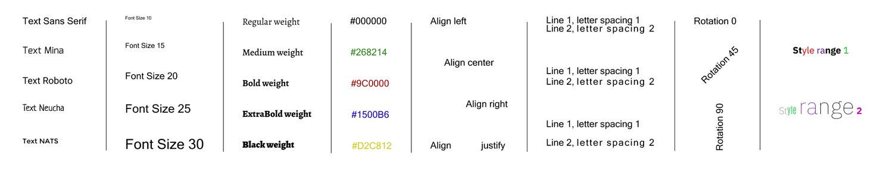
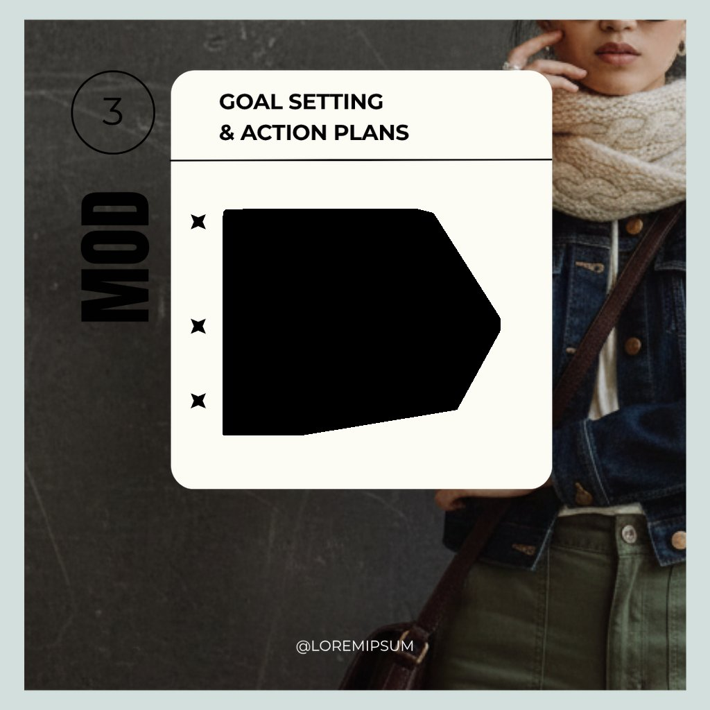
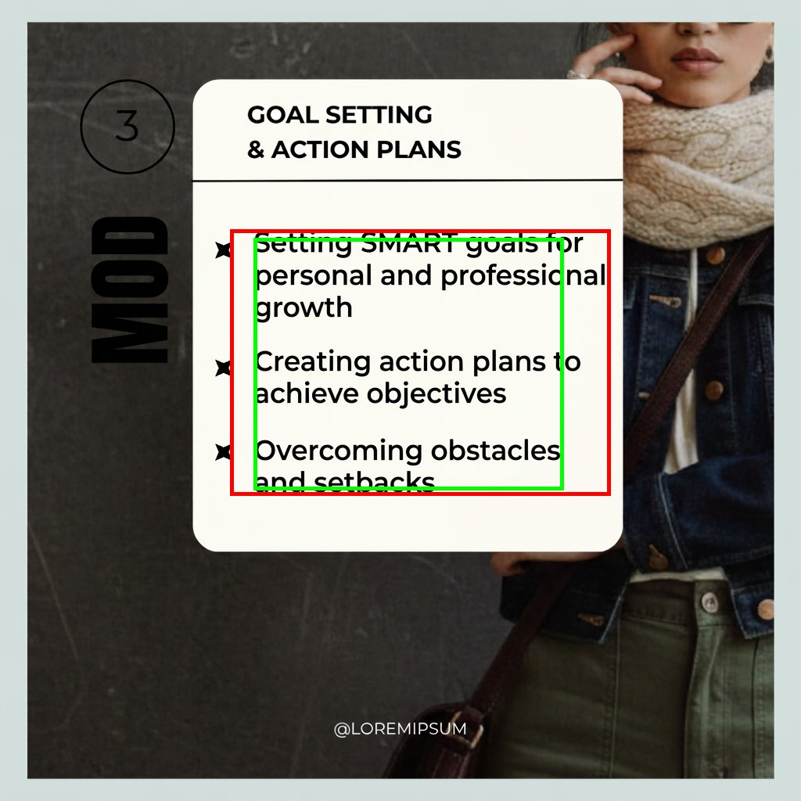
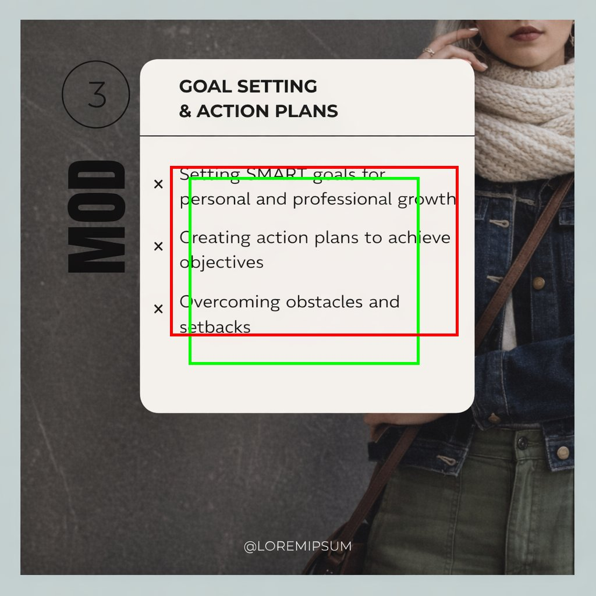
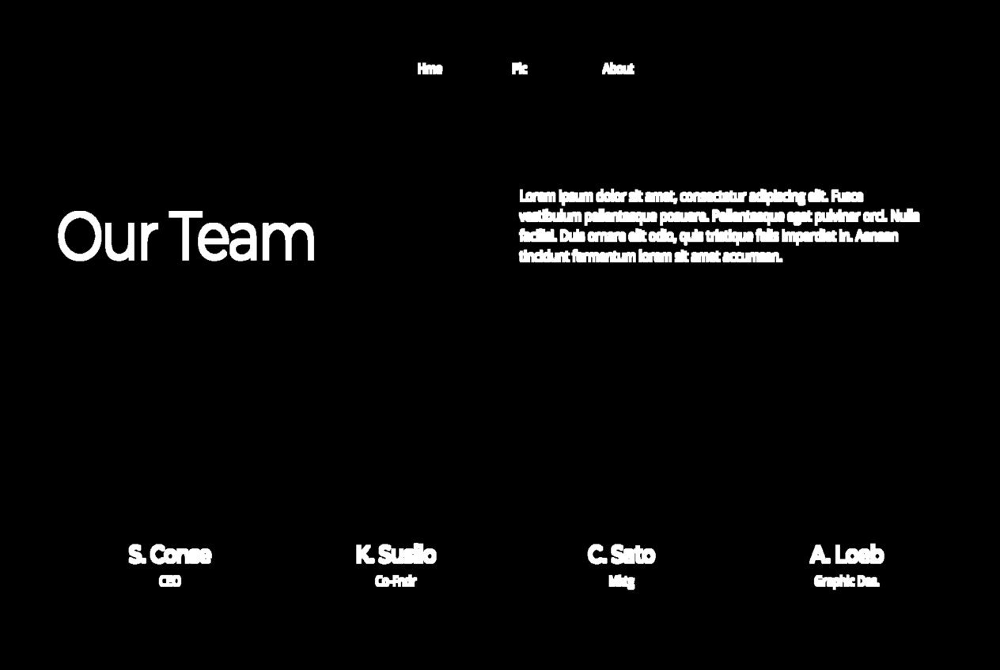
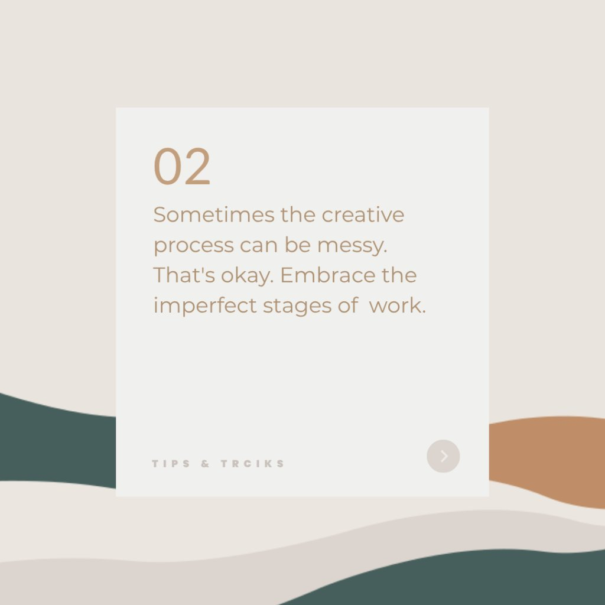
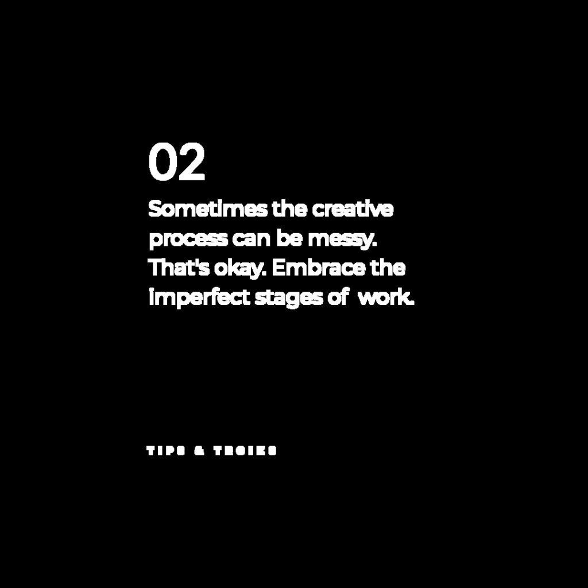
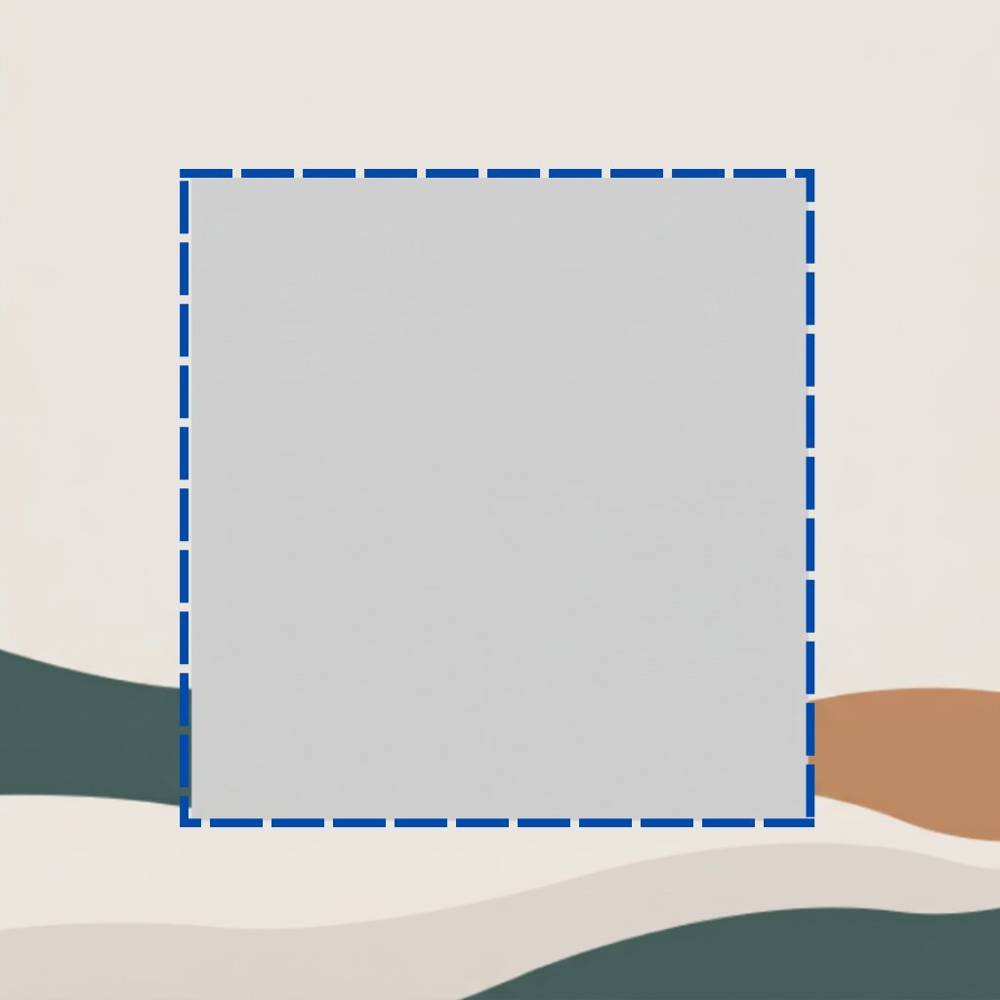

4 Typography Tasks
4.1 Typography Understanding
In graphic design, text is not merely readable content but a visual element that conveys hierarchy, tone, and brand identity through its typographic specification. We evaluate whether models can perceive fine-grained text properties across ten tasks on 2,568 text elements extracted from 989 layouts (Section 2), spanning font identification, color estimation, property prediction, curved-text detection, inline style-span recovery, and rotation estimation. Table 14 lists the task definitions and dataset statistics for this domain. Visual examples of the different typographic properties appear in Figure 8.
Results.
Tables 15–18 present the full results. The results reveal five key patterns across the typography understanding tasks:
| Task | Description | Samples | Classes | Metrics |
| Font Family Prediction | Identify the font family used for a target text string. Evaluation set contains 167 distinct typefaces with a long-tail distribution skewed toward Poppins, Montserrat, and Roboto. | 2,556 | 167 families | Top-1 Acc, Macro-F1 |
| Text Color Prediction | Predict the foreground color of a text element as a hex value. A prediction is perceptually acceptable when E 5 (CIEDE2000). | 2,498 | Continuous | E, E5, Hue Acc |
| Font Size Prediction | Estimate the font size in pixels of a target text element from the rendered design. | 2,556 | Continuous (px) | MAE |
| Font Weight Prediction | Predict the CSS font weight on the 100–900 scale. Weight 400 (regular) accounts for roughly half the dataset and weight 700 (bold) for about 30%. | 2,556 | 100–900 | Accuracy |
| Text Alignment Prediction | Predict whether a text element is aligned left, center, right, or justify. | 2,556 | 4 classes | Accuracy |
| Line Height Prediction | Estimate the line height in pixels of a target text element. | 2,556 | Continuous (px) | MAE |
| Letter Spacing Prediction | Estimate the letter spacing in em units of a target text element. | 2,556 | Continuous (em) | MAE |
| Curved Text Detection | Determine whether a text element follows a curved path and estimate its curvature value in . Only 1.0% of elements are curved (), making the curved-only metrics the informative ones. | 2,556 | is-curved Acc, Curv. MAE | |
| Style Range Detection | Identify which character spans carry a distinct inline style and return their character-index intervals with associated properties. Of 2,568 samples, only 19 have two or more style ranges. | 2,556 | 1–6+ ranges | Span IoU, Exact Match |
| Text Rotation Prediction | Predict the rotation angle in degrees of a target text element. Most text is axis-aligned, so the rotated-only MAE isolates angle estimation quality. | 2,556 | is-rot. Acc, Angle MAE |

| Font Family | Text Color | |||||
| Model | Acc | F1 | E | RGB | E | HueAcc |
| Gemini-3.1-Flash-Lite | 0.065 | 0.002 | 52.41 | 192.5 | 0.118 | 0.219 |
| Gemini-3.1-Pro | 0.047 | 0.004 | 54.97 | 201.3 | 0.114 | 0.194 |
| GPT-5.4 | 0.237 | 0.055 | 5.57 | 20.0 | 0.633 | 0.881 |
| Claude-Opus-4.6 | 0.006 | 0.003 | 14.05 | 47.1 | 0.382 | 0.696 |
| Font Size | Weight | Align | Line Ht. | Letter Sp. | |
| Model | MAE | Acc | Acc | MAE | MAE |
| Gemini-3.1-Flash-Lite | 38.42 | 0.390 | 0.428 | 43.88 | 0.045 |
| Gemini-3.1-Pro | 35.53 | 0.407 | 0.441 | 42.16 | 0.038 |
| GPT-5.4 | 8.97 | 0.552 | 0.851 | 15.66 | 0.016 |
| Claude-Opus-4.6 | 10.84 | 0.491 | 0.861 | 17.17 | 0.034 |
| Curved Text (=2,568) | Text Rotation (=2,568) | ||||||
| Model | Acc | MAE | Detcurv | MAEcurv | Acc | MAE | MAErot |
| Gemini-3.1-Flash-Lite | 0.972 | 1.26 | 0.000 | 59.50 | 0.927 | 4.18 | 53.99 |
| Gemini-3.1-Pro | 0.979 | 1.15 | 0.000 | 59.50 | 0.928 | 4.08 | 55.23 |
| GPT-5.4 | 0.995 | 0.58 | 0.885 | 43.77 | 0.980 | 0.93 | 18.67 |
| Claude-Opus-4.6 | 0.975 | 1.23 | 0.923 | 79.92 | 0.972 | 1.41 | 30.79 |
| All (=2,568) | 1-range (=2,549) | 2-range (=19) | ||||
| Model | IoU | EM | IoU | EM | IoU | EM |
| Gemini-3.1-Flash-Lite | 0.376 | 0.000 | 0.377 | 0.000 | 0.244 | 0.000 |
| Gemini-3.1-Pro | 0.375 | 0.000 | 0.376 | 0.000 | 0.215 | 0.000 |
| GPT-5.4 | 0.975 | 0.000 | 0.977 | 0.000 | 0.824 | 0.000 |
| Claude-Opus-4.6 | 0.982 | 0.000 | 0.984 | 0.000 | 0.775 | 0.000 |
- •
Font recognition is weak across the board. The best model achieves only 23.7% top-1 accuracy ( over the next best), with Macro-F1 an order of magnitude lower, confirming that correct predictions concentrate on high-frequency typefaces while the vast majority of the 167 families score zero F1.
- •
Color perception varies dramatically across models. The best model achieves E = 5.57 with 63.3% of predictions within the perceptually acceptable E 5 threshold, while the weakest models produce E 52, colors that are perceptually unrelated to the ground truth. Claude occupies an intermediate position (E = 14.05, hue accuracy 69.6%).
- •
Typographic property estimation is unevenly solved. Font size and line height show the largest gaps (up to difference; GPT-5.4 MAE = 8.97 px vs. Gemini 36 px), while letter spacing is the easiest property for all models (MAE 0.045 em). Text alignment is the most consistently predicted property, with the best model reaching 86.1%.
- •
Curved text and rotation expose a binary capability gap. The best models correctly identify 88.5–92.3% of the 26 curved elements, while some models score zero, classifying every element as straight. On text rotation, rotated-only MAE ranges from 18.67° to over 54° across models.
- •
Style range localization is achievable but exact recovery is not. The best models achieve span IoU of up to 0.982 (vs. 0.376 for Gemini), but exact match is 0% across all models and all stratifications, indicating that while models can localize styled spans, they cannot jointly recover the full typographic specification within those spans. For representative failure cases, see Figure 9.
(a) Font Family Prediction
GT:
"Message" – Lora
GPT-5.4:
\CormorantGaramond"Message" – Cormorant Garamond
Gemini Lite:
\Montserrat"Message" – Montserrat
Gemini Pro:
\BebasNeue"Message" – Bebas Neue
GPT recognizes the serif style but picks the wrong family. Both Gemini variants predict fonts from entirely different categories.
(b) Text Color Prediction
GT: rgb(1,1,1)
GPT-5.4: #FFFFFF
The model predicts the exact opposite color. Gemini Pro returns empty strings on multiple color queries, while Gemini Lite defaults to #000000 regardless of the actual color.
(c) Curved Text Detection
GT:
curved, curvature = 55
Gemini Lite:
straight, curvature = 0
A clearly arced text element is classified as straight. Both Gemini models achieve zero detection rate on all 26 curved elements, predicting straight for every sample.
(a) Original layout
(b) Layout re-rendered using predicted font size and text position.
4.2 Styled Text Generation
Styled text generation evaluates a model’s ability to translate structured typographic constraints into visually accurate text rendering. In addition to producing the correct string, the model must faithfully reproduce the full typographic specification, including font family, size, color, alignment, and spacing. We evaluate two settings, with both restricted to 1:1 aspect-ratio samples built from Google open-source fonts to ensure evaluator reliability:
- •
Styled text element generation: the model generates an isolated text patch from a target string and typography specification, without layout context.
- •
Styled text rendering to layout: the model restores missing text into a masked layout image while preserving all surrounding unmasked pixels, with the masked layout provided as additional input.
Each model receives the target text content and a structured typography specification (font family, size, color, alignment, spacing); in the layout setting it additionally receives the masked layout image. Table 19 presents the results. The prompt templates used in this task are provided in Appendix B. In the layout setting, the editable text region is provided as a tight polygonal mask computed from the convex hull algorithm.
Results.
Table 19 reports quantitative results for both element-level generation and layout-level rendering, while Figure 11 illustrates representative failures in the practical layout-editing setting. The central challenge is not simply rendering plausible styled text, but restoring it within the prescribed masked region without altering surrounding content. Across models, this requirement remains unmet: layout-level spatial fidelity is limited, and qualitative examples show that generated text often extends beyond the editable region or modifies nearby design elements. The main observations are as follows:
- •
Mask-constrained text insertion remains unreliable. In the layout setting, even the best model achieves only IoU = 0.580 and F1 = 0.685, indicating limited agreement with the ground-truth text region. Figure 11 further illustrates that edits frequently overflow outside the input masks and modify the nearby contents. This suggests that current models do not reliably confine text generation to the intended region.
- •
Fine-grained typography recovery remains uneven even in the easier element setting. Gemini-3.1-Flash-Img achieves the best font family accuracy, alignment accuracy, and color MAE in the element setting, indicating stronger adherence to the requested typographic specification than GPT-Image-1.5. Nevertheless, font family accuracy remains low overall, indicating that faithful recovery of detailed typographic attributes remains unsolved.
| Spatial Accuracy | Font | Style Fidelity | Render | ||||||
| Model | Task | IoU | F1 | Font | Align | Size | Color | LPIPS | SSIM |
| GPT-Image-1.5 | layout | 0.523 | 0.658 | 0.190 | 0.690 | 36.50 | 16.75 | 0.227 | 0.704 |
| element | - | - | 0.100 | 0.660 | 104.2 | 16.04 | - | - | |
| Gemini-3.1-Flash-Img | layout | 0.580 | 0.685 | 0.468 | 0.670 | 27.59 | 16.00 | 0.056 | 0.923 |
| element | - | - | 0.353 | 0.696 | 188.7 | 15.66 | - | - | |
| Text Prompt | Masked Input | GT | Gemini-3.1 Flash Image | GPT-Image 1.5 |
|
 |
 |
 | ||
4.3 Text Removal & Background Regeneration
Text removal evaluates whether a model can support practical design editing by erasing typography without leaving ghosting artefacts and faithfully reconstructing the hidden background structure so that the canvas remains reusable for subsequent editing. This capability is essential for template adaptation, multilingual translation, and iterative copy revision [4, 2, 3, 20, 21, 9, 5]. Each model receives a source design image together with a binary mask indicating the text regions (white = editable, black = preserved) and a unified instruction to remove all text and reconstruct the background naturally. We evaluate on 100 randomly sampled templates from the LICA dataset (Section 2), filtered to exclude low-resolution images (max side 1,024 px) and extreme aspect ratios ( 2.0). Since each model supports a different set of aspect ratios, inputs are resized to model-compatible resolutions before generation and resized back to the original dimensions for evaluation. Table 20 presents the results.
Results.
The results reveal two key patterns across the text removal task:
- •
Text erasure is effectively solved, but background reconstruction is not. Both models achieve high text removal rates ( 94%), confirming that the text itself is effectively erased. However, they diverge sharply on reconstruction fidelity, with PSNR ranging from 16.64 to 30.22 (13.6 dB difference) and SSIM from 0.743 to 0.944, indicating that faithfully reconstructing the occluded background remains a significant challenge.
- •
Higher removal rate does not imply better reconstruction. The model with a marginally higher raw removal rate (95.3% vs. 94.5%) produces substantially worse background reconstruction (LPIPS = 0.331 vs. 0.088; FID = 115.75 vs. 54.05), suggesting it over-generates or hallucinates content in the masked regions rather than faithfully reconstructing what was occluded.
| Text Removal | Perceptual Quality | Reconstruction | |||||
| Model | Remove | FID | LPIPS | CLIP | DINO | PSNR | SSIM |
| Gemini-3.1-Flash-Img | 0.945 | 54.05 | 0.088 | 0.238 | 0.906 | 30.22 | 0.944 |
| GPT-Image-1.5 | 0.953 | 115.75 | 0.331 | 0.236 | 0.820 | 16.64 | 0.743 |
Input Image
Input Mask
Gemini-3.1
Flash Image
GPT-Image 1.5
(a)

(b)



(c)
| Task Group | Key Finding | Best Performance | Best Model | Status |
| Font Recognition | Weak across the board; correct predictions concentrate on high-frequency typefaces while the vast majority of 167 families score zero F1 | 23.7% top-1 acc, Macro-F1 acc | GPT-5.4 | Unsolved |
| Text Color Prediction | Dramatic variation across models; weakest models produce colors perceptually unrelated to ground truth (E 52) | E = 5.57, 63.3% within E 5 | GPT-5.4 | Unsolved |
| Typographic Properties (Size, Weight, Align, Spacing) | Font size and line height show the largest gaps across models (up to ); letter spacing is easiest for all models | Font size MAE = 8.97 px, Align = 86.1% | GPT-5.4 (most), Claude (align) | Partially solved |
| Curved Text & Rotation | Binary capability gap; some models correctly detect 88.5–92.3% of curved elements while others score zero; rotated-only MAE ranges from 18.67° to 54° | 92.3% curved detection, 18.67° rot. MAE | Claude (curved), GPT-5.4 (rotation) | Partially solved |
| Style Range Detection | Span localization is achievable but exact recovery of full typographic specification is not; exact match is 0% across all models | Span IoU = 0.982, EM = 0% | Claude-Opus-4.6 | Partially solved |
| Styled Text Generation | Layout-level text insertion remains unreliable: models frequently spill beyond the mask and alter nearby content, while fine-grained typography recovery remains limited | IoU = 0.580 (layout), Font Acc. = 46.8% (layout) | Gemini-3.1-Flash-Img | Partially solved |
| Text Removal & Regeneration | Text removal is effectively solved but background reconstruction is not; higher removal rate does not imply better reconstruction | PSNR = 30.22, SSIM = 0.944, LPIPS = 0.088 | Gemini-3.1-Flash-Image | Partially solved |